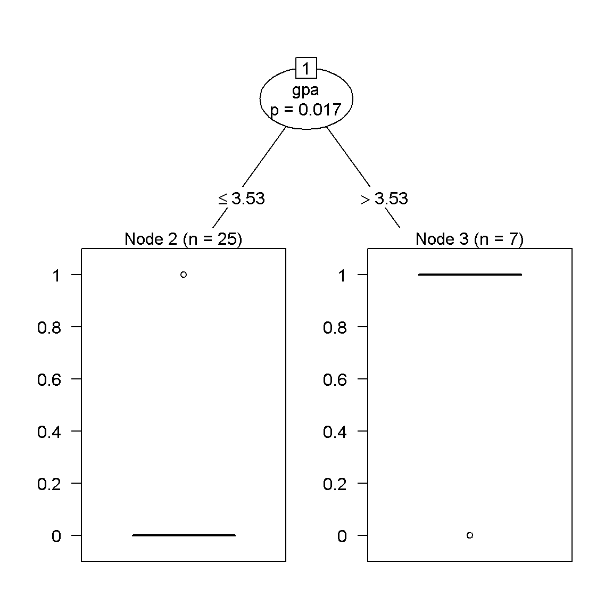
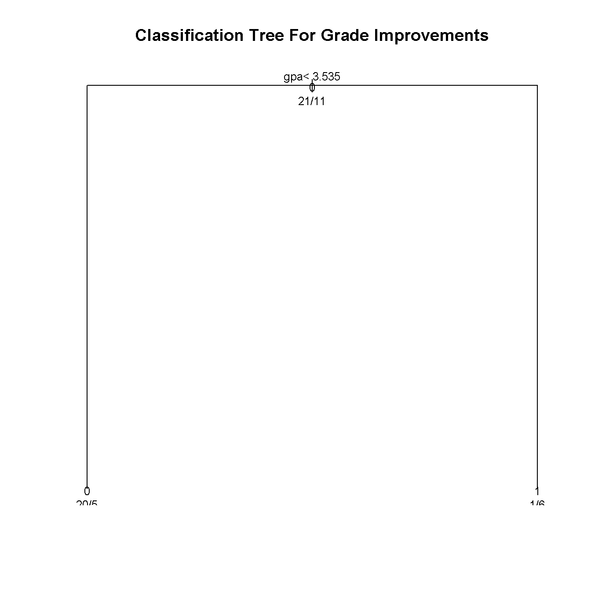
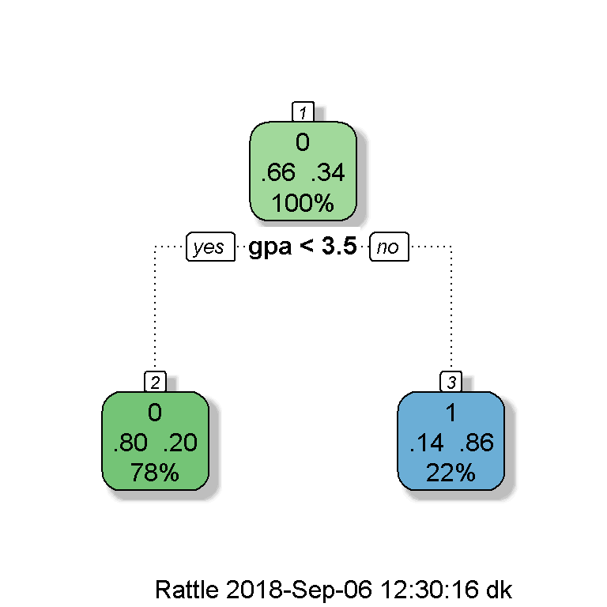
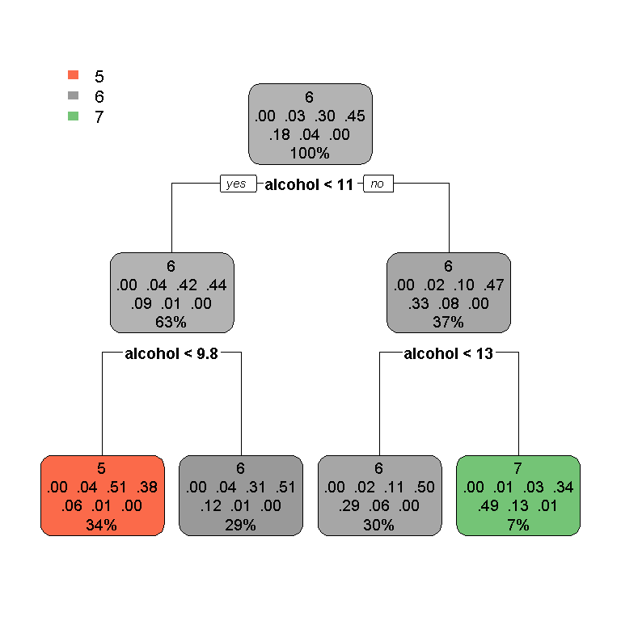
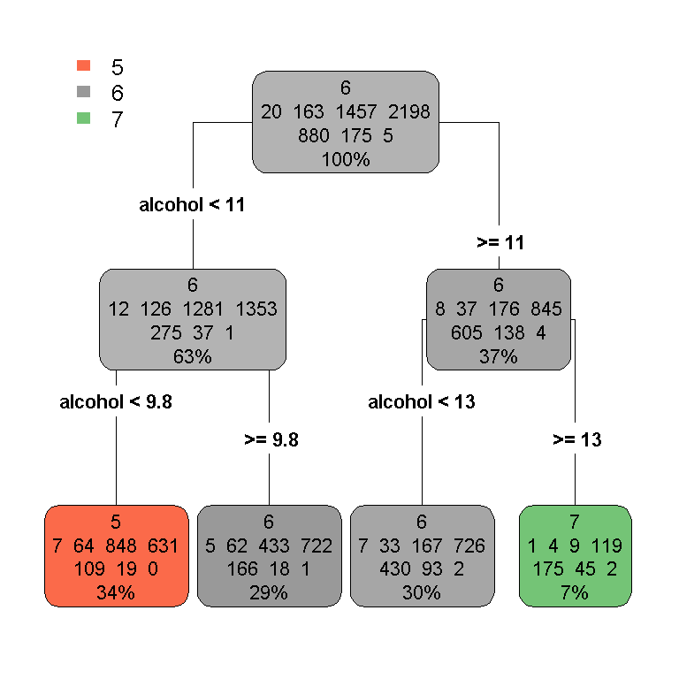
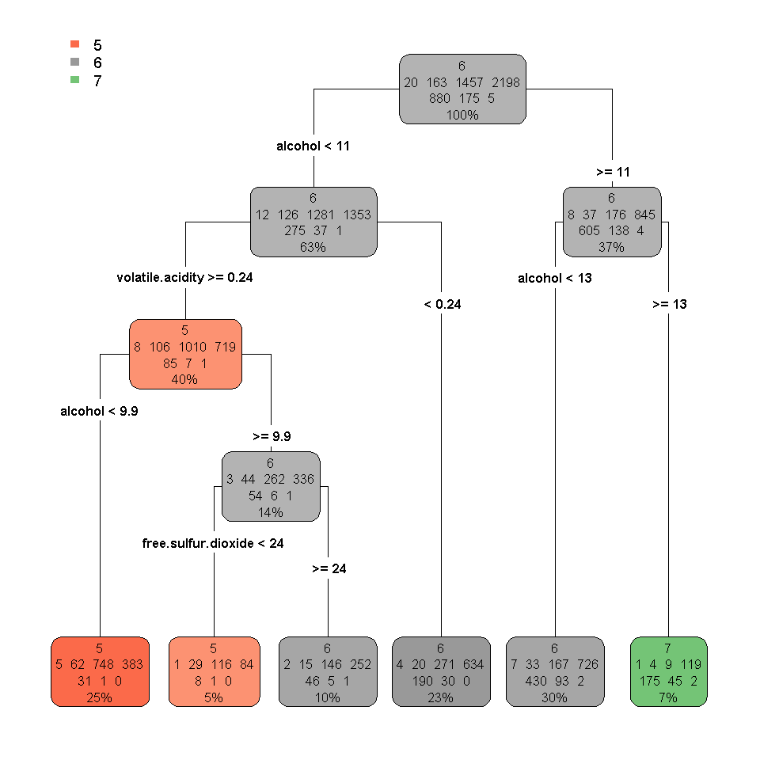
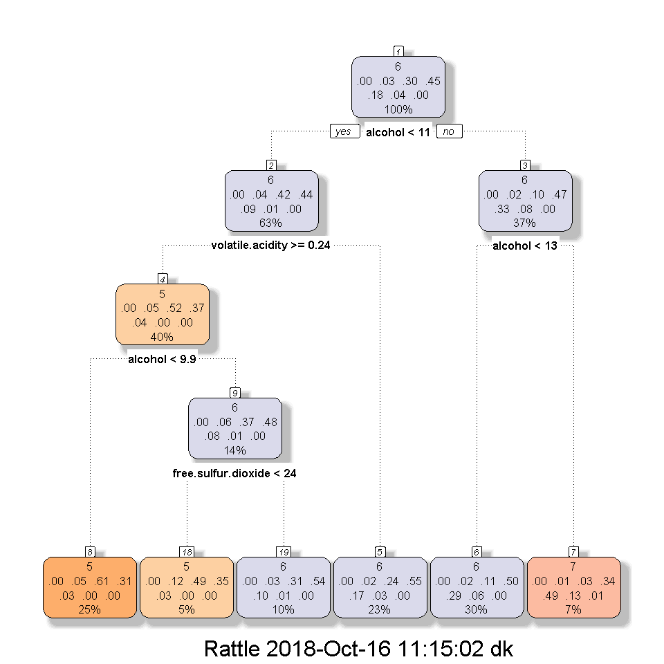

Decision Trees In R
Hi there. In this post, I share some experimental work that I have done with decision trees in R.
Sections
Decision Trees Overview
Decision trees are used as a tool for making predictions on categorical variables. These trees also give information on decision options and the criteria involved in these decisions. They appear in a flow chart type of fashion that is easy to follow for the viewer.
An example of a decision tree is shown below.
Image Source: https://databricks.com/wp-content/uploads/2014/09/decision-tree-example.png
{kind=link}
Example One - A Small Grades Dataset
In this example, I work with a small dataset from R’s faraway library. This dataset is called spector and it investigates whether a student’s grade in an economics class has improved under a new teaching method. Here is an image of the documentation (or use ??faraway and click on spector).

In R, I load in the faraway package and take a look at the data with the head(), tail() and str() functions.
# Decision Trees In R:
# References:
# https://www.tutorialspoint.com/r/r_decision_tree.htm
# https://www.r-bloggers.com/a-brief-tour-of-the-trees-and-forests/
# https://www.youtube.com/watch?v=JFJIQ0_2ijg
# http://trevorstephens.com/kaggle-titanic-tutorial/r-part-3-decision-trees/
# Load packages:
library(faraway)
library(party)
library(rpart)
grades_data <- spector
# Preview data:
head(grades_data)## grade psi tuce gpa
## 1 0 0 20 2.66
## 2 0 0 22 2.89
## 3 0 0 24 3.28
## 4 0 0 12 2.92
## 5 1 0 21 4.00
## 6 0 0 17 2.86tail(grades_data)## grade psi tuce gpa
## 27 1 1 17 3.39
## 28 0 1 24 2.67
## 29 1 1 21 3.65
## 30 1 1 23 4.00
## 31 0 1 21 3.10
## 32 1 1 19 2.39str(grades_data)## 'data.frame': 32 obs. of 4 variables:
## $ grade: num 0 0 0 0 1 0 0 0 0 1 ...
## $ psi : num 0 0 0 0 0 0 0 0 0 0 ...
## $ tuce : num 20 22 24 12 21 17 17 21 25 29 ...
## $ gpa : num 2.66 2.89 3.28 2.92 4 2.86 2.76 2.87 3.03 3.92 ...
I test out this decision tree from the ctree() function.
# Create decision treeby using ctree(). Did the student's grade improved?
tree_output <- ctree(formula = grade ~ psi + tuce + gpa,
data = grades_data)
plot(tree_output)
This output does not look great nor informative. The ctree() function is not recommended in my opinion.
I then try making a decision tree with the rpart package in R. Here is what I got.
## Using rpart package:
model_fit <- rpart(formula = grade ~ psi + tuce + gpa, method = "class",
data = grades_data)
# Plot tree
plot(model_fit, uniform = TRUE, main = "Classification Tree For Grade Improvements")
text(model_fit, use.n = TRUE, all=TRUE, cex = .8)
For some reason, the output got cutoff in my Rstudio program. A different tool would be needed.
What worked for me was using the rpart and rattle packages together to create a good decision tree with colour. The fancyRpartPlot() function from the rattle package does the trick.
## Using rpart package:
library(rpart)
library(rattle)## Rattle: A free graphical interface for data mining with R.
## Version 4.1.0 Copyright (c) 2006-2015 Togaware Pty Ltd.
## Type 'rattle()' to shake, rattle, and roll your data.model_fit <- rpart(formula = grade ~ ., method = "class",
data = grades_data)
# Plot tree
fancyRpartPlot(model_fit)
Example Two - Wine Quality Data
This second example deals with wine quality data. I load in the data from a website URL link.
# Example Two:
# Load packages:
library(party)
library(rpart)
url <- "https://archive.ics.uci.edu/ml/machine-learning-databases/wine-quality/winequality-white.csv"
white_wine_data <- read.csv(url, header = TRUE, sep = ";")
Previewing the data with the head() and tail() functions gives:
# Preview the data:
head(white_wine_data)## fixed.acidity volatile.acidity citric.acid residual.sugar chlorides
## 1 7.0 0.27 0.36 20.7 0.045
## 2 6.3 0.30 0.34 1.6 0.049
## 3 8.1 0.28 0.40 6.9 0.050
## 4 7.2 0.23 0.32 8.5 0.058
## 5 7.2 0.23 0.32 8.5 0.058
## 6 8.1 0.28 0.40 6.9 0.050
## free.sulfur.dioxide total.sulfur.dioxide density pH sulphates alcohol
## 1 45 170 1.0010 3.00 0.45 8.8
## 2 14 132 0.9940 3.30 0.49 9.5
## 3 30 97 0.9951 3.26 0.44 10.1
## 4 47 186 0.9956 3.19 0.40 9.9
## 5 47 186 0.9956 3.19 0.40 9.9
## 6 30 97 0.9951 3.26 0.44 10.1
## quality
## 1 6
## 2 6
## 3 6
## 4 6
## 5 6
## 6 6
You can examine the data a bit further with the summary() and str() functions in R.
# Check summary and data structure:
summary(white_wine_data)## fixed.acidity volatile.acidity citric.acid residual.sugar
## Min. : 3.800 Min. :0.0800 Min. :0.0000 Min. : 0.600
## 1st Qu.: 6.300 1st Qu.:0.2100 1st Qu.:0.2700 1st Qu.: 1.700
## Median : 6.800 Median :0.2600 Median :0.3200 Median : 5.200
## Mean : 6.855 Mean :0.2782 Mean :0.3342 Mean : 6.391
## 3rd Qu.: 7.300 3rd Qu.:0.3200 3rd Qu.:0.3900 3rd Qu.: 9.900
## Max. :14.200 Max. :1.1000 Max. :1.6600 Max. :65.800
## chlorides free.sulfur.dioxide total.sulfur.dioxide
## Min. :0.00900 Min. : 2.00 Min. : 9.0
## 1st Qu.:0.03600 1st Qu.: 23.00 1st Qu.:108.0
## Median :0.04300 Median : 34.00 Median :134.0
## Mean :0.04577 Mean : 35.31 Mean :138.4
## 3rd Qu.:0.05000 3rd Qu.: 46.00 3rd Qu.:167.0
## Max. :0.34600 Max. :289.00 Max. :440.0
## density pH sulphates alcohol
## Min. :0.9871 Min. :2.720 Min. :0.2200 Min. : 8.00
## 1st Qu.:0.9917 1st Qu.:3.090 1st Qu.:0.4100 1st Qu.: 9.50
## Median :0.9937 Median :3.180 Median :0.4700 Median :10.40
## Mean :0.9940 Mean :3.188 Mean :0.4898 Mean :10.51
## 3rd Qu.:0.9961 3rd Qu.:3.280 3rd Qu.:0.5500 3rd Qu.:11.40
## Max. :1.0390 Max. :3.820 Max. :1.0800 Max. :14.20
## quality
## Min. :3.000
## 1st Qu.:5.000
## Median :6.000
## Mean :5.878
## 3rd Qu.:6.000
## Max. :9.000str(white_wine_data)## 'data.frame': 4898 obs. of 12 variables:
## $ fixed.acidity : num 7 6.3 8.1 7.2 7.2 8.1 6.2 7 6.3 8.1 ...
## $ volatile.acidity : num 0.27 0.3 0.28 0.23 0.23 0.28 0.32 0.27 0.3 0.22 ...
## $ citric.acid : num 0.36 0.34 0.4 0.32 0.32 0.4 0.16 0.36 0.34 0.43 ...
## $ residual.sugar : num 20.7 1.6 6.9 8.5 8.5 6.9 7 20.7 1.6 1.5 ...
## $ chlorides : num 0.045 0.049 0.05 0.058 0.058 0.05 0.045 0.045 0.049 0.044 ...
## $ free.sulfur.dioxide : num 45 14 30 47 47 30 30 45 14 28 ...
## $ total.sulfur.dioxide: num 170 132 97 186 186 97 136 170 132 129 ...
## $ density : num 1.001 0.994 0.995 0.996 0.996 ...
## $ pH : num 3 3.3 3.26 3.19 3.19 3.26 3.18 3 3.3 3.22 ...
## $ sulphates : num 0.45 0.49 0.44 0.4 0.4 0.44 0.47 0.45 0.49 0.45 ...
## $ alcohol : num 8.8 9.5 10.1 9.9 9.9 10.1 9.6 8.8 9.5 11 ...
## $ quality : int 6 6 6 6 6 6 6 6 6 6 ...
One decision tree I want to try out is predicting quality based on the wine’s pH, alcohol content, sulphates and chlorides.
## Using rpart package:
library(rpart)
library(rpart.plot)
winemodel_fit <- rpart(formula = quality ~ pH + alcohol + sulphates + chlorides , method = "class",
data = white_wine_data)
# Plot tree
#plot(winemodel_fit, uniform = TRUE, main = "Asessing White Wine Quality")
# text(winemodel_fit, use.n = TRUE, all=TRUE, cex = .8)
rpart.plot(winemodel_fit) #Decision Tree Using Rpart.Plot
This decision tree comes out nicely and you can easily read it from top to bottom. Note that the sample size is 4898. Numbers at the top of the nodes represent the predicted wine quality number. Quality scores are from 3 to 9. The percentages at the bottom represent the percentage of the sample size. As an example, the 63% in the second row left node is 63% of 4898. In this node, a quality score of 6 is predicted at .44 (or 44%). It appears that the predictions are using a likelihood approach where the quality score is chosen based on the highest percentage.
An alternate decision tree would include counts instead of percentages corresponding to the wine quality.
rpart.plot(winemodel_fit, type = 4, extra = 101) #Decision Tree Using Rpart.Plot
From the rattle and RColorBrewer packages in R, there is an another alternate decision tree you can create. This tree has percentages and not counts in the nodes.
library(rattle)
library(RColorBrewer)
fancyRpartPlot(winemodel_fit)
A Full Decision Tree
The decision trees above were predicting wine quality with some of the other variables. This tree will predict wine quality with all of the other variables. This tree will have more nodes and branches.
# Full Decision Tree:
winemodel_fit2 <- rpart(formula = quality ~ . , method = "class",
data = white_wine_data)
rpart.plot(winemodel_fit2, type = 4, extra = 101) #Decision Tree Using Rpart.Plot
fancyRpartPlot(winemodel_fit2)
These trees have added more detail by adding volatile.acidity and free.sulfur.dioxide into the decisions. I am not sure if these additional factors actually affect the quality and taste of the wine. It would be best to consult with wine experts to see if these results are valid. (Wine quality seems like a subjective measure as well.)